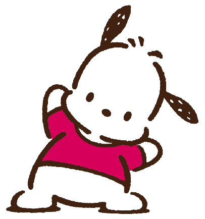

One of the more popular Sanrio characters is Pochacco! He is a dog who loves sports, going on walks, and eating banana flavored ice cream. He can be seen on Sanrio branded merchandise and collaborations.
Pochacco was born on a day that does not actually exist - February 29th, 1989. This date is supposed to be a Leap Day, but it does not correspond to the year. Pochacco is usually seen wearing T-shirts or hoodies and playing various sports and skateboarding!